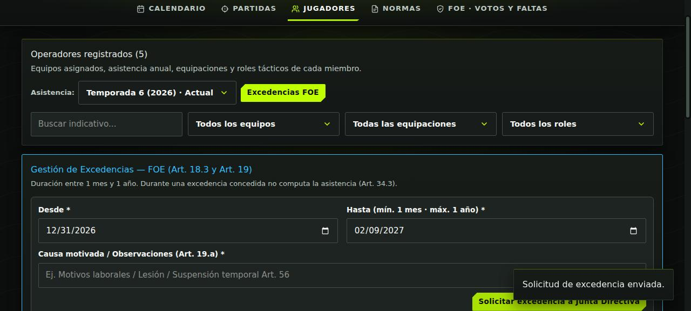
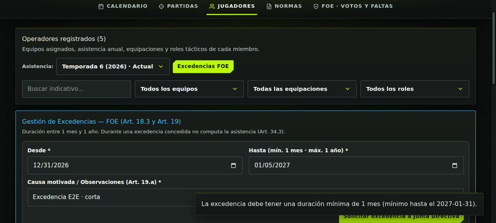
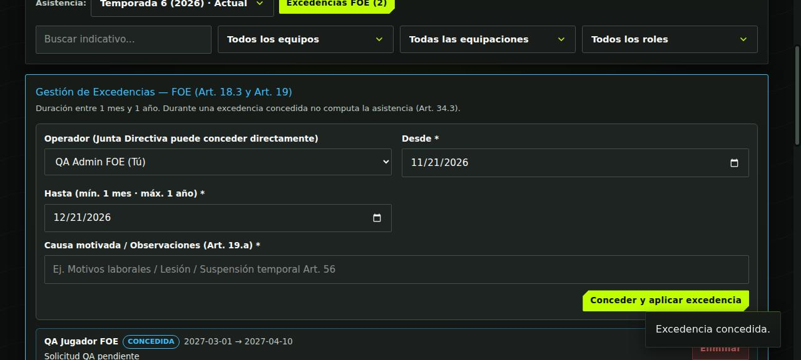
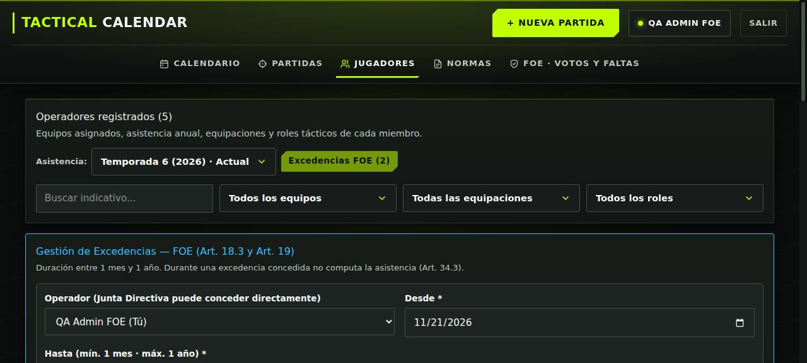
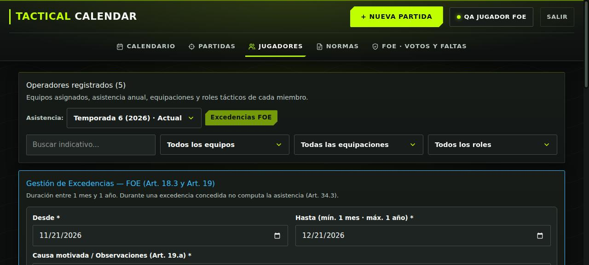

Informe de Selenium Java
Suite f-excedencias · tactical-calendar · 22/11/2026, 0:06:12 · 15.2 s
100%Tasa de éxito (5 de 5)
5Pasan
0Fallan
0Omitidos
| Pasa | TC-F01 Un jugador solicita una excedencia y queda pendiente de la Junta QA Jugador FOE Captura |
5.8 s |
| Pasa | TC-F02 Una excedencia de menos de 1 mes se rechaza QA Jugador FOE Captura |
3.5 s |
| Pasa | TC-F03 La Junta Directiva concede una solicitud pendiente QA Admin FOE Captura |
3.7 s |
| Pasa | TC-F04 Nadie puede concederse su propia excedencia QA Admin FOE Captura |
3.4 s |
| Pasa | TC-F05 Un jugador sin cargo no puede conceder excedencias QA Jugador FOE Captura |
2.7 s |